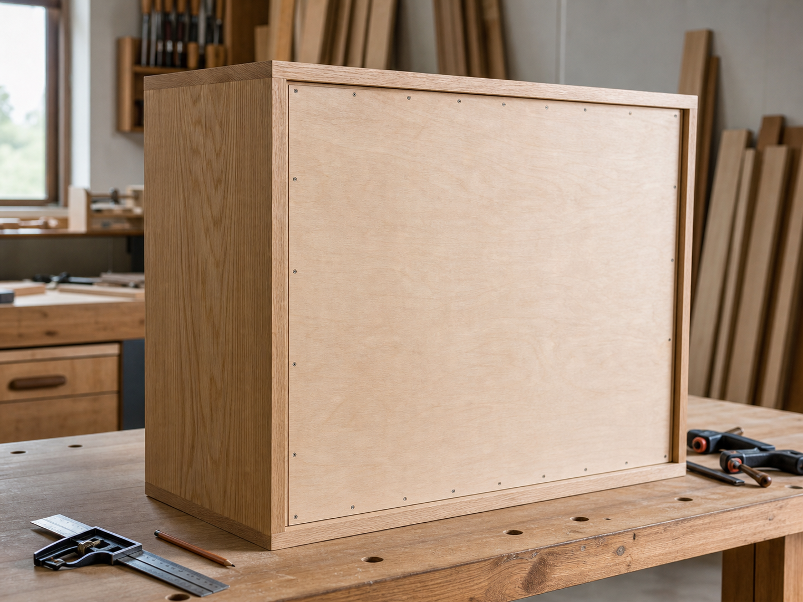

수납장 뒷판이 직각과 흔들림을 잡는 방식

수납장이나 책장을 앞에서 보면 문짝, 서랍, 선반이 먼저 보입니다. 뒷판은 벽을 향해 숨어 있기 때문에 얇은 가림판 정도로 생각하기 쉽습니다. 그러나 수납장 몸체가 오래 반듯하게 서 있으려면 뒷판의 역할을 가볍게 볼 수 없습니다. 특히 폭이 넓고 높이가 있는 수납장은 옆에서 작은 힘을 받아도 사각 몸체가 미세하게 비틀리려는 경향이 있습니다.
좋은 뒷판은 먼지를 막고 내부를 정돈해 보이게 하는 데서 끝나지 않습니다. 좌우 측판, 상판, 하판이 만든 사각형을 한 면으로 묶어 주고, 문짝과 서랍이 움직일 기준선을 유지하게 돕습니다. 그래서 수납장을 제작하거나 고를 때는 앞면의 마감만큼 뒷면의 구조도 함께 봐야 합니다.
빈 사각형은 쉽게 평행사변형이 됩니다
네 개의 막대를 사각형으로 연결했다고 해도 모서리가 조금씩 돌아가면 전체 형상은 평행사변형처럼 기울 수 있습니다. 목공에서는 이런 옆힘에 의한 비틀림과 기울어짐을 흔히 래킹으로 설명합니다. 앞서 살펴본 대각선 가새가 사각형을 삼각형으로 나누어 잡는다면, 뒷판은 사각형의 뒤쪽 면을 넓은 판으로 막아 같은 문제를 다른 방식으로 다룹니다.
건축 목구조에서 합판이나 OSB 같은 목질 판재가 전단벽의 일부로 작동하는 것도 이 원리를 이해하는 데 도움이 됩니다. 다만 건물의 구조 계산을 작은 가구에 그대로 적용할 수는 없습니다. 가구 제작에서 중요한 점은 넓은 판재가 둘레 프레임에 고르게 연결될 때, 상자가 옆힘을 받아 비스듬히 찌그러지는 움직임을 줄일 수 있다는 기본 구조입니다.
뒷판은 판 한 장보다 둘레 연결이 중요합니다
뒷판이 몸체에 닿아 있기만 하면 구조가 완성되는 것은 아닙니다. 판의 네 변이 측판, 상판, 하판에 얼마나 안정적으로 기대고 연결되는지가 핵심입니다. 뒤쪽에 턱을 파고 그 안에 뒷판을 끼운 뒤 못, 나사, 스테이플, 접착 등을 적절히 쓰면 뒷판의 가장자리가 몸체와 함께 움직입니다. 반대로 얇은 판을 몇 군데만 느슨하게 붙이면 먼지는 막을 수 있어도 직각을 잡는 효과는 제한적입니다.
Fine Woodworking의 캐비닛 뒷판 글도 책이 많이 실리는 책장이나 인셋 문이 있는 장식장에서는 단단한 뒷판이 몸체를 직각으로 잡고 문이 뒤틀려 걸리는 일을 줄이는 데 중요하다고 설명합니다. 여기서 핵심은 뒷판의 재료 이름 하나가 아니라 제작 의도입니다. 보이지 않는 뒤쪽이라도 힘을 받는 부위라면, 뒷판은 마감 부품이 아니라 몸체 구조의 일부가 됩니다.
홈, 턱, 덧댐은 각각 다른 느낌을 만듭니다
뒷판을 넣는 방식은 크게 몇 가지로 나눌 수 있습니다. 가장 단순한 방식은 몸체 뒤쪽 가장자리에 얇은 판을 덧대어 고정하는 것입니다. 제작이 빠르고 수리도 쉽지만, 판의 모서리와 체결부가 그대로 드러날 수 있고 고급 수납장에서는 뒷모습이 거칠어 보일 수 있습니다.
한 단계 더 정돈된 방식은 뒤쪽에 턱을 파서 판을 그 안에 앉히는 것입니다. 판이 몸체 뒤로 튀어나오지 않고 가장자리 지지가 생기므로 외관과 구조가 함께 안정됩니다. 작은 수납장에서는 홈을 내고 뒷판을 끼워 넣는 방식도 쓰입니다. 이 경우 조립 순서가 더 까다로울 수 있지만, 판의 위치가 자연스럽게 정해지고 옆에서 보았을 때 마감선이 단정합니다.
문짝과 서랍의 정렬도 뒷판에 영향을 받습니다
수납장 앞면의 틈이 계속 달라진다면 경첩이나 레일만 볼 일이 아닐 수 있습니다. 몸체가 직각을 잃으면 문짝은 아무리 조정해도 위아래 틈이 일정하게 유지되기 어렵고, 서랍 레일도 좌우 평행을 잃기 쉽습니다. 특히 인셋 도어처럼 문짝이 몸체 안쪽에 정확히 들어가는 가구는 작은 비틀림도 바로 눈에 띕니다.
뒷판은 이 기준선을 뒤에서 붙잡습니다. 상판과 하판이 서로 평행하게 머물고, 좌우 측판이 같은 각도로 서 있어야 앞면의 문짝과 서랍도 예측 가능한 위치에서 움직입니다. 그래서 조립할 때는 뒷판을 고정하기 전에 몸체의 대각선 치수를 확인하거나 직각자를 대어 보는 과정이 중요합니다. 한쪽으로 틀어진 상태에서 뒷판을 단단히 고정하면, 뒷판은 틀어진 형상을 그대로 잠가 버릴 수 있습니다.
얇은 뒷판도 쓰임에 맞으면 충분합니다
모든 가구에 두꺼운 뒷판이 필요한 것은 아닙니다. 작은 벽걸이장, 하중이 가볍고 벽에 안정적으로 고정되는 장, 내부가 거의 보이지 않는 보조 수납장에서는 얇은 합판이나 하드보드가 합리적인 선택일 수 있습니다. 중요한 것은 수납장의 크기, 문짝 방식, 이동 가능성, 실리는 무게, 뒤쪽이 보이는지 여부를 함께 판단하는 일입니다.
반대로 키가 큰 책장, 무거운 물건을 담는 장식장, 인셋 문이 달린 수납장, 방 한가운데에서 뒤쪽이 보이는 가구라면 뒷판의 강성, 고정 방식, 표면 마감까지 더 세심하게 봐야 합니다. 보이는 뒤쪽이라면 프레임 앤드 패널이나 폭이 나뉜 세로 판 구성처럼 구조와 미감을 함께 고려할 수도 있습니다.
좋은 뒷판은 수리와 점검도 생각합니다
뒷판을 너무 영구적으로 붙이면 나중에 내부 배선, 조명, 레일, 벽 고정 장치를 점검하기 어려울 수 있습니다. 반대로 몇 개의 얇은 못만으로 대충 붙이면 운반이나 사용 중에 판이 떠서 삐걱거릴 수 있습니다. 제작 목적에 따라 나사 체결, 분리 가능한 패널, 부분 접착, 숨김 고정 등을 선택하는 이유가 여기에 있습니다.
이미 쓰고 있는 수납장을 살필 때는 뒤쪽 판이 들떠 있지 않은지, 모서리 못이나 나사가 빠지지 않았는지, 몸체를 옆에서 밀었을 때 뒷판과 프레임이 따로 움직이지 않는지 확인해 볼 수 있습니다. 작은 유격은 시간이 지나며 문짝 틈과 서랍 움직임으로 드러납니다. 뒷판의 흔들림을 고치는 일은 보이지 않는 부분을 수리하는 것처럼 보이지만, 실제로는 앞면의 사용감을 회복하는 작업입니다.
목간의 시선
목간은 수납장을 하나의 상자로 봅니다. 좋은 상자는 앞면만 아름다운 것이 아니라 옆면, 뒷면, 내부 선반이 서로 같은 기준을 공유합니다. 뒷판은 그 기준을 조용히 유지하는 부품입니다. 벽을 향해 숨어 있더라도 몸체의 직각, 문짝의 틈, 선반의 안정감을 함께 책임집니다.
가구를 고를 때 뒤쪽을 한 번 보는 습관은 생각보다 많은 정보를 줍니다. 뒷판이 턱 안에 안정적으로 들어가 있는지, 체결이 둘레에 고르게 분포하는지, 판이 몸체와 같은 방향으로 단정하게 마감되었는지를 보면 제작자가 보이지 않는 구조를 얼마나 중요하게 다루었는지 알 수 있습니다. 좋은 수납장은 닫힌 문 뒤와 벽을 향한 뒷면에서도 설계의 태도가 드러납니다.